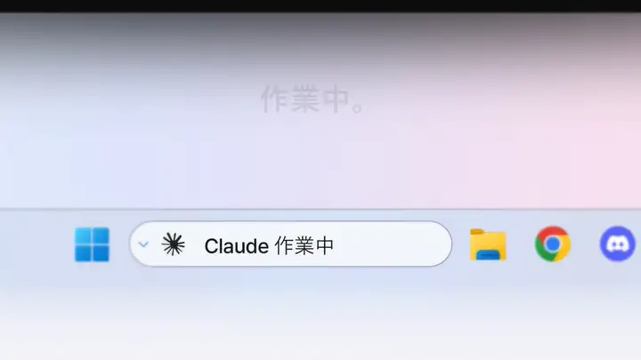
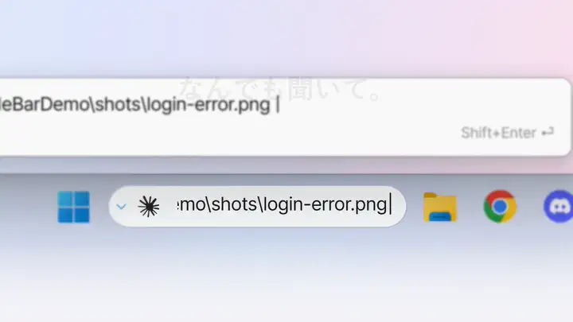
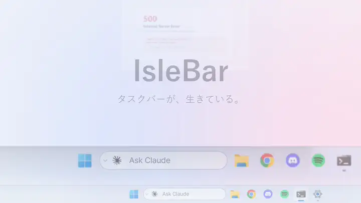
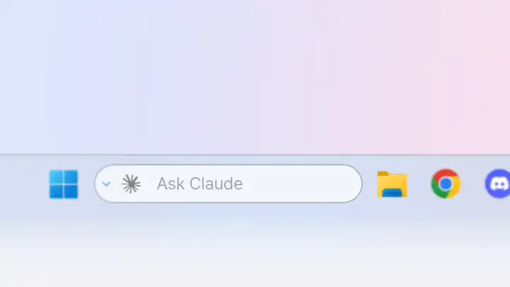
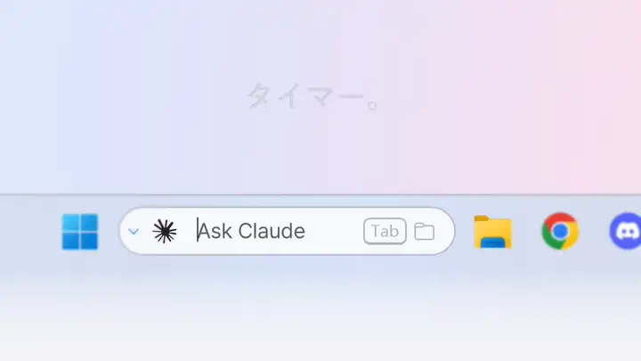
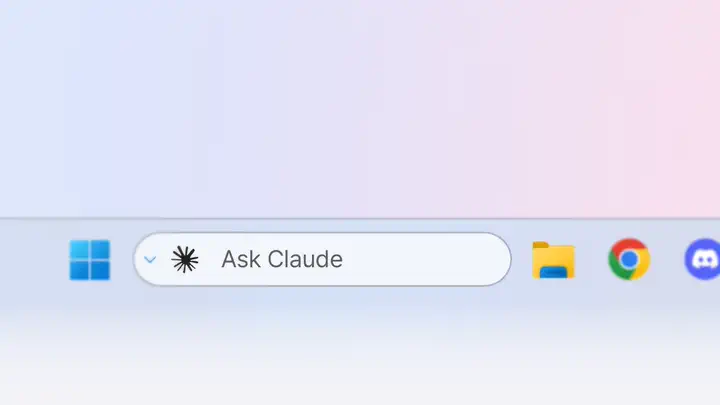
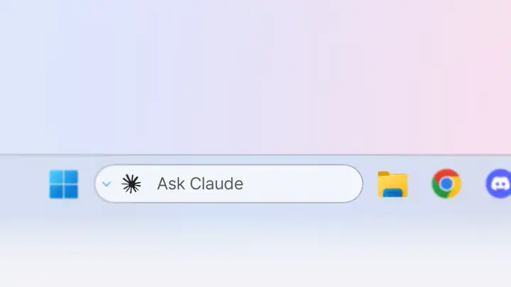

タスクバーから、すぐ頼む。
バーをクリックするか Ctrl+Alt+C を押し、やりたいことを入力して Enter。ターミナルが開き、Claude Code や Codex がその内容で動き出します。
- ↑ ↓ で直近 50 件の質問を呼び出せます。
- 長い質問はバーの上にプレビュー表示。Shift+Enter で複数行の入力欄が開きます。
- ⌄ ボタンにはセッション、モデル、思考の強さ、権限、リモートコントロールの設定をまとめておけます。
生きている Windows 11 タスクバー。検索ボックスから Claude Code や Codex に頼んで — 作業中か、応答待ちか、完了したかがすぐにわかります。
IsleBar は Windows 11（x64）で、タスクバーの検索がボックスまたはアイコンとして表示されている状態で動作します。
作業中。応答待ち。完了。検索ボックスが教えてくれるから、Claude Code や Codex が作業している間は目を離していられます。オレンジの縁は返事を待っているしるし、緑は完了のしるしです。

バーはいつもの検索ボックスの場所にそのまま。変わるのは中身だけです。

バーをクリックするか Ctrl+Alt+C を押し、やりたいことを入力して Enter。ターミナルが開き、Claude Code や Codex がその内容で動き出します。

スクリーンショットやログをバーにドロップすると、そのパスが入力欄に入り、すぐに質問できます。

Codex CLI にもまったく同じ 作業中 · 応答待ち · 完了 が表示されます。マークは PC にすでに入っている Codex 拡張機能から読み込むので、IsleBar 自体は OpenAI のロゴを同梱していません。

25m、90s、1h 30m と入力して Enter。変わる数字だけがくるりと回ります。

Tab を押して入力するだけ。すべてのドライブから見つかったファイルが、入力に合わせてタスクバーの上に表示されます。検索エンジンは Everything。

Chrome、Edge、Firefox などのブラウザでのダウンロードを進行中に表示し、終わるとファイル名と 完了 を表示。クリックするとエクスプローラーでファイルを表示します。

Spotify、ブラウザの YouTube など、ほとんどのプレーヤーをアルバムアート、レベルバー、アルバムの色の再生バーで表示。マウスを乗せると ⏮ ⏯ ⏭。
曲の途中でエージェントが完了しても、音楽を隠さずに緑の縁だけが光ります。

ヘッドホン、充電、インターネット、コピーしたテキスト、CPU やメモリの高負荷、集中セッション、カレンダーの予定、マイクやカメラの使用中 — どれも一瞬表示して、すっと引っ込みます。ポップアップはありません。
色の意味はひとつずつ：オレンジは AI が返答を待っているとき、赤は対処が必要なとき（バッテリー残量の低下、または利用上限やエラーで AI が止まったとき）、緑は何かが終わったとき。応答不可（おやすみモード）中は通知音を鳴らさず、全画面のゲームや動画でも消音にできます。

IsleBar は Windows のテーマに合わせ、切り替えた瞬間に色が変わります — 再起動は不要です。
はい — MIT ライセンスの無料オープンソースです。修正、アイデア、フィードバックは GitHub でいつでも歓迎します。
はい。IsleBar をインストールして Claude Code / Codex の連携（セットアップのチェック1つ）をオンにすると、返答が必要なときはオレンジの枠、完了すると緑の枠と通知音でお知らせします。
AI 機能（バーから頼む、作業中 · 応答待ち · 完了 を見る）にだけ必要です。音楽、タイマー、ダウンロード、通知はなくても使えます。ファイル検索には Everything が必要です。
いいえ。PC の中だけで動きます。クラッシュレポートはオンにした場合のみ、エラー・バージョンと基本的な機器情報だけを送ります — ウィンドウのタイトル、ファイル、プロンプト、IP アドレスは決して送りません。プライバシーポリシー。
詳細情報 → 実行 を選んでください。コード署名を準備中です。
設定 › アプリ › IsleBar › アンインストール。元の検索ボックスが戻り、IsleBar のフックも削除されます(ストア版は先に IsleBar の設定で Claude Code / Codex の接続をオフにしてください)。
English, 简体中文, 繁體中文, Français, Deutsch, Italiano, 日本語, 한국어, Português, Español — Windows の表示言語に合わせます。
不具合、アイデア、質問 — GitHub かメールでお知らせください。